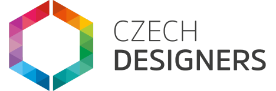

Další studie

Jak jsme pomocí strategického propojení virálních krátkých videí a expertního obsahu na YouTube vybudovali stroj, který organicky generuje důvěru a prodává prémiové konzultace.
Organických zhlédnutí
Vysoce relevantních sledujících na YouTube
Návratnost bez placené reklamy
Firma Czech Designers stála před klasickým problémem konzultačního byznysu. Prodávat prémiové poradenství a odborné know-how je složité, protože vyžaduje obrovskou míru důvěry. Tradiční placená reklama (Facebook/Instagram Ads) je v tomto odvětví drahá a má jednu zásadní slabinu: Lidé si nekoupí drahou konzultaci od někoho, koho vidí poprvé ve sponzorovaném příspěvku.
Potřebovali jsme systém, který z úplného cizince udělá fanouška a následně platícího klienta. A to vše ideálně organicky, bez nutnosti pálit desetitisíce měsíčně v reklamních kampaních.
Vytvořili jsme výkonný prodejní trychtýř (funnel), který pracuje 24 hodin denně, 7 dní v týdnu. Namísto náhodného natáčení videí jsme obsah přísně rozdělili do tří na sebe navazujících fází. Pro dosažení maximálních výsledků jsme nenechali nic náhodě. V rámci příprav jsme s klientem absolvovali vzdělávací schůzku s asistentkou Denise Vencela z jedné z nejlepších marketingových agentur v Česku a Slovensku – VYVYD Creatives a detailně jsme s nimi ladili celkovou strategii.
Instagram, Facebook, TikTok. Na začátku trychtýře potřebujeme objem. Tvořili jsme dynamická, úderná vertikální videa (15–45 vteřin). Cíl: Algoritmus ukáže video desetitisícům lidí. Zachytíme jejich pozornost a na konci videa je vyzveme k interakci v komentářích.
Tady se děje to hlavní kouzlo. Pomocí nástroje ManyChat jsme zautomatizovali přechod diváků z Instagramu na YouTube. Jakmile uživatel okomentoval Reels určitým slovem, automat mu do DM okamžitě poslal odkaz na dlouhé (10–20minutové) video. Na YouTube jsme pak šli do absolutní hloubky a vybudovali potřebnou důvěru.
V dlouhých videích na YouTube už nebylo potřeba dělat agresivní prodej. Stačilo jemné připomenutí s odkazem v popisku. Lidé, kteří video dokoukali, byli natolik „zahřátí“, že sami klikali a kupovali placené konzultace.
Podívejte se na výsledná videa, která celou tuto strategii držela pohromadě po vizuální i obsahové stránce.
Tento strategický přístup přinesl zásadní výsledky. Během jediného roku jsme dokázali vygenerovat přes 1 000 000 organických zhlédnutí napříč platformami a k tomu 120 000 pouze na YouTube.
Mimořádný organický zásah: Podařilo se nám vyprodukovat 2 dlouhá videa, z nichž každé přesáhlo hranici 10 000 zhlédnutí. Dosáhnout takových čísel s dlouhým formátem na kanálu, který má kolem 1 000 sledujících, je obrovský úspěch. Jasně to dokazuje, že YouTube vyhodnotil náš obsah jako vysoce kvalitní a masivně ho doporučuje novým divákům.
YouTube kanál získal téměř 1 000 vysoce relevantních odběratelů. Funnel zásadně ušetřil čas klienta na prodejních schůzkách – na konzultace totiž začali chodit lidé, kteří už měli nakoukané hodiny obsahu, znali hodnotu klienta a rovnou vytahovali peněženku.
Graf níže ukazuje, jak trychtýř dodával uzavřené konzultace naprosto automaticky. Každá z těchto konzultací je zpoplatněna částkou 3 000 Kč.
Za sledovaných 6 měsíců systém vygeneroval celkem 14 konzultací, což odpovídá obratu 42 000 Kč. Je důležité zdůraznit, že toto není hlavní příjem klienta. Konzultace slouží jako vedlejší produkt a strategický filtr. Právě z těchto hovorů totiž vznikají zakázky na kompletní realizace 3D vizualizací, kde je cena projektu mnohonásobně vyšší a tvoří jádro byznysu.
Nebudeme vám jen natáčet hezká videa. Postavíme vám strategii, která reálně generuje poptávky.
Domluvit nezávazný hovor